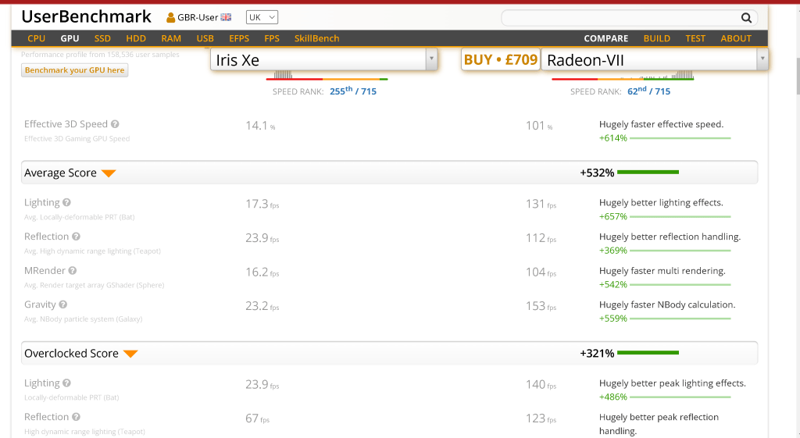
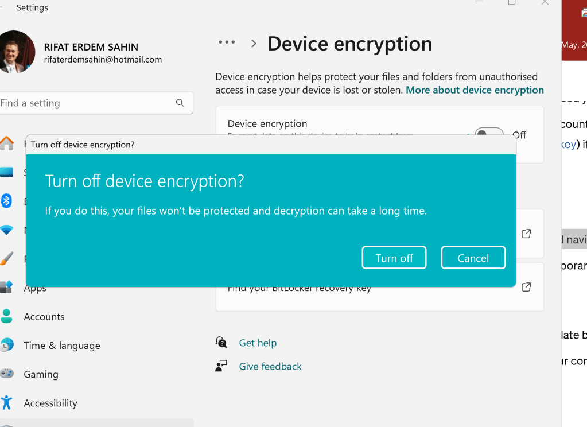
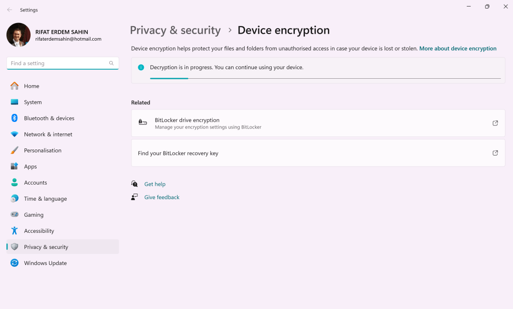
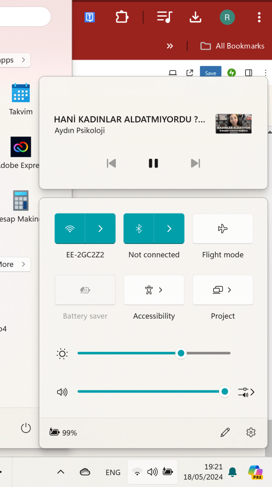

update the computer for Arya
Turning on gpu is a hassle with skull canyon
the touch could be interesting for her
still she keeps the gpu
used gpuz > https://gpu.userbenchmark.com/Compare/Intel-Iris-Xe-vs-AMD-Radeon-VII/m1268515vs4035

https://community.chocolatey.org/packages/gpu-z
installingin the radeon driver > https://www.amd.com/en/support/download/drivers.html
programs > robox,minecraft
https://community.chocolatey.org/packages/minecraft-launcher

To resolve issues related to Razer Core and BitLocker screen, follow these steps:
Razer Core Issues
-
Check Connections:
-
Ensure the Thunderbolt/USB-C cable is securely connected to both the Razer Core and your laptop.
-
Verify that the power cable is properly plugged in.
-
Update Drivers and Firmware:
-
Visit the Razer support website to download and install the latest drivers and firmware for your Razer Core.
-
Update your GPU drivers as well.
-
Enable Thunderbolt in BIOS:
-
Restart your laptop and enter the BIOS setup (usually by pressing F2, F10, or Del during startup).
-
Ensure that Thunderbolt is enabled and set to the appropriate security level.
-
Reinstall Razer Synapse:
-
Uninstall Razer Synapse from your computer.
-
Download and install the latest version of Razer Synapse from the Razer website.
-
Check Device Manager:
-
Open Device Manager and ensure that the Razer Core and connected GPU are recognized.
-
If there are any devices with a yellow warning icon, update their drivers or troubleshoot the issue.
BitLocker Screen Issues
-
Enter Recovery Key:
-
If you are stuck on the BitLocker screen, you will need your BitLocker recovery key.
-
You can find the recovery key in your Microsoft account (https://account.microsoft.com/devices/recoverykey) if you backed it up there.
-
Enter the recovery key to unlock the drive.
-
Suspend BitLocker Protection:
-
Once you have access, open the Control Panel and navigate to BitLocker Drive Encryption.
-
Click on "Suspend protection" for the drive to temporarily disable BitLocker.
-
Update System:
-
Ensure your Windows operating system is up-to-date by running Windows Update.
-
Check for any firmware or driver updates from your computer manufacturer.
-
Run BitLocker Troubleshooter:
-
Open Command Prompt as an administrator and run
manage-bde -statusto check the status of BitLocker. -
Use
manage-bde -protectors -disable C:to disable BitLocker protection on drive C: if needed. -
Repair Boot Configuration:
-
If BitLocker issues persist, you may need to repair the boot configuration.
-
Boot from a Windows installation media, choose "Repair your computer," then navigate to "Troubleshoot" > "Advanced options" > "Command Prompt."
-
Run the following commands:
sh bootrec /fixmbr bootrec /fixboot bootrec /scanos bootrec /rebuildbcd -
Check Drive Health:
-
Use tools like
chkdskto check for drive errors that might be causing BitLocker issues.
sh chkdsk C: /f /r /x
Additional Tips
-
Contact Support:
-
If the issues persist, consider contacting Razer support for Razer Core issues and Microsoft support for BitLocker issues.
-
Backup Data:
-
Always ensure that you have a backup of your important data before making any significant changes to your system.
Following these steps should help you resolve common issues related to Razer Core and BitLocker screens. If you encounter any specific errors or messages, provide those details for more tailored assistance.
2 screens and 2 gpu uses
and the razercore powers it up


bitlocker off now it works
Imported from rifaterdemsahin.com · 2024